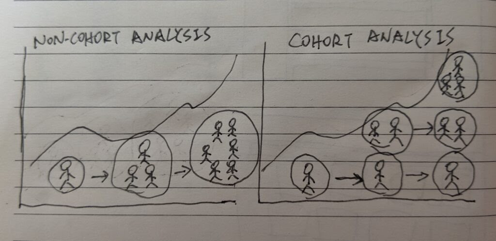
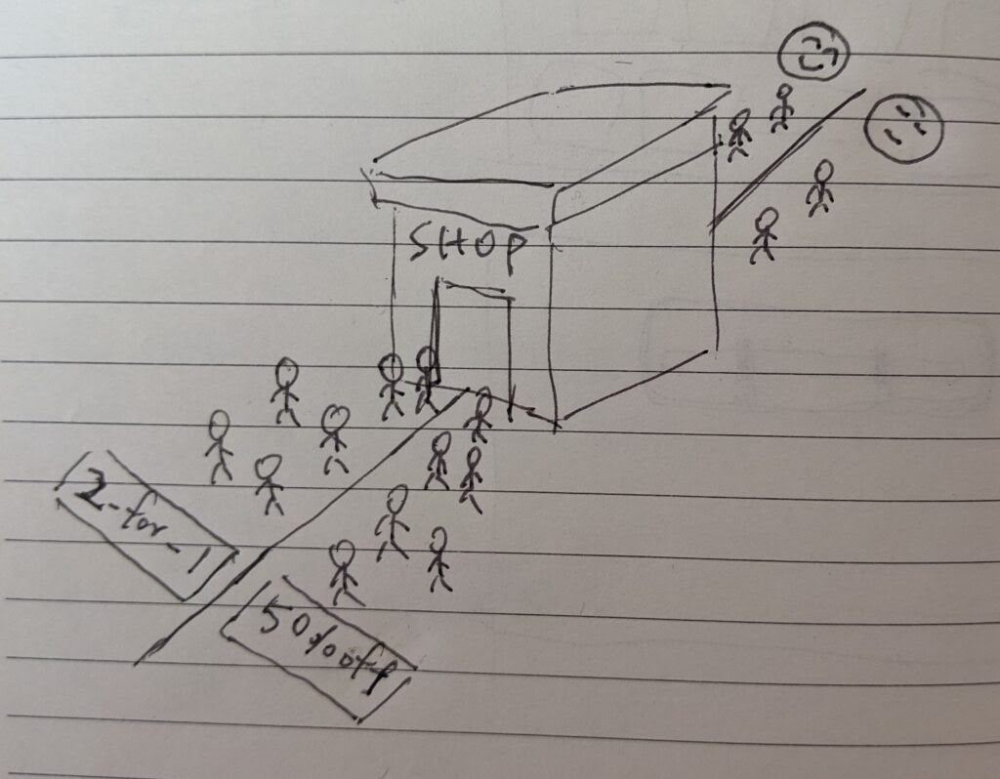
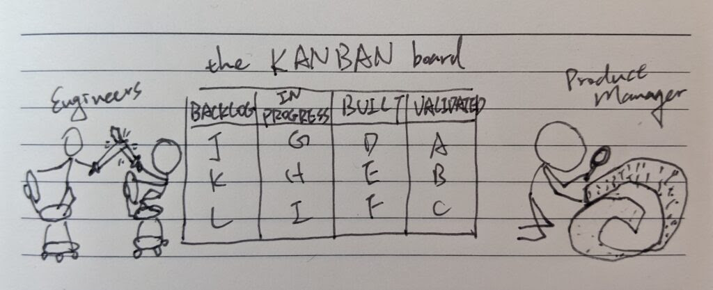

Books In Minutes: The Lean Startup Chapter 7 – Measure
Lance from Books In Minutes <lance@booksinminutes.co>
Sat, Mar 20, 2021 at 9:32 AM
To: Lance <hello@lancechen.tw>
Books In Minutes
Are you making your product better?
How do you know?
- Eric Ries, The Lean Startup
Read In Minutes
Innovation Accounting
A startup would have some ideal business numbers that it would like to achieve at the beginning, be it the number of customers, or revenue and profit, and it is usually not quite there yet. Its job at the time is twofold
measure where it is right now
conduct experiments to learn how to get closer to the ideal state
Most startups have at least some traction, and many of them persevere too long and eventually die. Traditional business relies on accounting to grow on the right track, but startups are unpredictable in the same way. Ries invented a framework called innovation accounting to prevent this from happening.
To make use of innovation accounting one has to quantify its leap of faith assumptions first. For example, a manufacturing company would maximize its profitability of each customer, the cost of acquiring new customers, and the repeat purchasing rate of existing customers. A marketplace company would maximize the retention rate of both the sellers and buyers, where the sellers would want more buyers to purchase and the buyers would want more sellers to compete for lower prices. And then followed by the three milestones:
Baseline
The first milestone is to fill your growth model with some baseline data, such as conversion rate, signup rate and customer lifetime value. To collect these data, follow the two steps
smoke test – put out a landing page with marketing materials to see if customers even have interests in the product before building anything
MVP – select the riskiest assumptions and build prototypes to test them
Tune the engine
Decide which of your drivers of growth you want to improve and make changes to your prototype with the goal to improve the driver. If a change does not improve the driver, it should be marked as a failure.
Pivot or Persevere
Over time, if the drivers of growth do not get closer to the ideal state, it is time to pivot.
Answering the Question “Are you making your product better?”
Vanity Metrics and Actionable Metrics
No matter how hard working you are, the effort will be in vain if you look at the wrong metrics. Even worse, some metrics could trick you into believing you are making progress. Some common pitfalls are gross metrics like total registered users and gross revenue. While you are seeing the favorable hockey stick graph for these metrics, it could actually be the result of paid acquisition, which is to reinvest the revenue into acquiring more customers. Ries called this kind of metrics “vanity metrics”.
Ries called the alternative kind of metrics that genuinely helps judge the business “actionable metrics”, which is based on looking at changes happening in different cohorts. Let me explain.
Cohort Analysis
The idea of cohort analysis is to look at the performance of the same group of people that comes into contact with the product. Thus, one can know exactly how a change has affected each group of people independently.

Group users into cohorts by time
Now that we know what metrics we should be looking at, and how we should look at them, it’s time to tune the engine.
Split Testing (A/B Testing)
The idea of split testing, also known as A/B testing, is to offer different versions of a product to different cohorts of users at the same time, and measure the changes in behavior among the cohorts.

A/B testing and measuring the results
With cohort analysis and split testing, we can confidently conduct experiments and tell whether they make the product better or not. However, when it comes to execution, we are likely to fall into this common pitfall – looking at the wrong metrics on productivity just like how we looked at the wrong metrics for growth.
Specialists like engineers and designers would consider their productivity as how many tasks they have done. We would tend to go with this pipeline execution, that the founders, directors, or product managers do the analysis and decide where to go next, while the specialists keep on to the rest of the tasks. They would try to not bother each other as much as they can.
Part of the reason to do validated learning is to reduce the waste on meaningless tasks. While it seems high productivity that both parties are completing tasks, the lessons learned from the previous experiments would not be reflected fast enough to the next step. Slowing down would be the antidote to this problem.
Kanban
Kanban restricted each of its four task buckets – backlog, in-progress, built, validated – to maximum of three tasks. The team will soon find out that all buckets are full of tasks. Unless they make room from the validated bucket, meaning to confirm whether a split-test has effect on the target metrics, no one could keep going on to new tasks.
The best way to keep the wheels turning is to make every task “validatable”. The specialists would not bother to start any task that is not part of a split-test experiment. The following tasks will be removed once a related task is validated as non-effective. Every tasks will be narrated in a understandable way: without a clear hypothesis, it cannot be validated. There will be no “I am just the executor”, the team works as a whole. The team can then be more productive.

A full Kanban board
Highlights
Every product development, marketing, or other initiative that a startup undertakes should be targeted at improving one of the drivers of its growth model.
The sign of a successful pivot: the new experiments you run are overall more productive than the experiments you were running before.
Poor quantitative results force us to declare failure and create the motivation, context, and space for more qualitative research.
Your Turn
Now that you have gained the insights into this chapter. Enjoy reading the whole chapter when you have some time.
If you do not have a copy yet, here is my affiliate link to purchase a Kindle version from Amazon (meaning I will get a cut if you purchase through this link). Or you could get one from a retailer on its website.
Thanks for reading! If you loved it, tell your friends to subscribe.